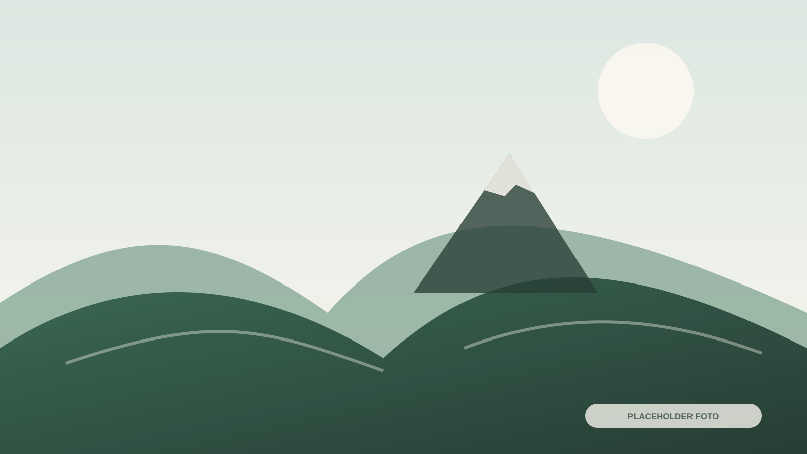

Katalog
Nama Tanaman 01
Nama ilmiah, manfaat, karakteristik, dan status ketersediaan.
Rumah Bibit Patakbanteng merupakan program konservasi lingkungan dan wisata edukasi pertanian berbasis masyarakat.
Rumah Bibit Patakbanteng direkonstruksi bersama Tim Amerta Pertiwi Universitas Airlangga dan berfungsi sebagai pusat pembibitan tanaman khas pegunungan serta pohon reboisasi untuk menjaga kelestarian ekosistem Gunung Prau.
Nama tanaman, nama ilmiah, manfaat, karakteristik, kegunaan konservasi, dan status ketersediaan belum tersedia.
Nama ilmiah, manfaat, karakteristik, dan status ketersediaan.

Nama ilmiah, manfaat, karakteristik, dan kegunaan konservasi.

Informasi akan ditambahkan berdasarkan data pengelola Rumah Bibit.
Detail teknis proses akan dilengkapi oleh pengelola Rumah Bibit.
Detail teknis proses akan dilengkapi oleh pengelola Rumah Bibit.
Detail teknis proses akan dilengkapi oleh pengelola Rumah Bibit.
Detail teknis proses akan dilengkapi oleh pengelola Rumah Bibit.
Detail teknis proses akan dilengkapi oleh pengelola Rumah Bibit.
Detail teknis proses akan dilengkapi oleh pengelola Rumah Bibit.

Program adopsi pohon dirancang untuk menghubungkan partisipasi pengunjung dengan kegiatan penanaman dan konservasi.
Mendukung penyediaan bibit, penanaman, dokumentasi, dan edukasi konservasi.
Alur, nilai kontribusi, jadwal, dan bentuk dokumentasi perlu ditetapkan oleh pengelola.
Lokasi detail, jam kunjungan, dan ketentuan kunjungan kelompok belum tersedia.
Hubungi pengelola untuk memastikan jadwal, kapasitas, dan aktivitas yang dapat diikuti.
Embed Google Maps akan ditambahkan setelah tautan lokasi resmi tersedia.
Buka Google MapsPelajari katalog bibit, proses pembibitan, program adopsi pohon, dan lokasi kegiatan.